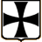

 Les Teutoniques
Histoire et Grands Maîtres
Ordre religieux et militaire fondé en Terre Sainte lors de la troisième croisade en 1191.
Origine et organisation
De son nom complet « Ordre des chevaliers Teutoniques de l'Hôpital Sainte-Marie-de-Jérusalem », l'ordre est à l'origine un simple hôpital créé par des bourgeois de Brême et de Lübeck, pendant le siège d'Acre (Palestine) en 1191. Transformé en ordre militaire en 1198, l'ordre des chevaliers Teutoniques est officiellement reconnu par le pape en 1199. Étroitement lié à la curie, il calque son organisation sur celle des Hospitaliers de Saint-Jean-de-Jérusalem et reprend les techniques des Templiers dans leur processus d'évangélisation. Tous ses membres, nobles allemands, sont vêtus d'une cape blanche ornée d'une croix noire. La règle, édictée en 1244, hiérarchise les différents membres (frères chevaliers, prêtres et domestiques) et les place sous l'autorité d'un grand maître. Élu à vie, le grand maître est assisté de cinq dignitaires : le grand commandeur, le maréchal, le trésorier, l'hospitalier et un responsable de la garde-robe.
Oeuvres
Au XIIIème siècle, l'ordre, d'abord implanté en Terre Sainte, acquiert de vastes domaines en Méditerranée et en Allemagne, où sont créés douze bailliages destinés à financer les expéditions. Dès 1211, les chevaliers Teutoniques migrent vers la Transylvanie et fondent la ville de Kronstadt (Brasov). En 1231, le grand maître Hermann von Salza entreprend, à la demande du duc Conrad de Mazovie, la conquête et la colonisation de la Prusse païenne, conquête qui se termine en 1283. L'ordre continue son expansion par fusion (en 1237 avec l'ordre des Porte-Glaive) ou achat (Poméranie-Ultérieure en 1309, Estonie en 1346). En 1329, les chevaliers Teutoniques reçoivent en fief du pape la région balte qui s'étend du golfe de Finlande à la Poméranie.
L'ordre des chevaliers Teutoniques obtient de l'empereur Frédéric II le statut et les privilèges accordés aux princes d'Empire. En 1309, il installe son siège à Marienburg (aujourd'hui Malbork, Pologne). Les chevaliers font édifier de nombreuses forteresses, comme celles de Marienburg ou de Gollub en Prusse. De même, ils fondent quatre-vingt treize villes sur leurs territoires (telle la ville de Königsberg, aujourd'hui Kaliningrad).
Déclin de l'ordre
De plus en plus contestés à partir de la fin du XIVème siècle, les chevaliers Teutoniques sont défaits à la bataille de Grunwald par les Polonais de Ladislas II Jagellon, en 1410, ce qui stoppe leur expansion territoriale. Heinrich von Plauen, grand maître de 1410 à 1413, cherche à réformer l'ordre en déclin mais se fait bientôt déposer par le chapitre. La guerre de Treize Ans (1454-1466) entre la Pologne de Casimir IV et les Teutoniques se termine par la restitution de tous les territoires de l'ordre à la Pologne, à l'exception de la Prusse orientale et de la Livonie, par la paix de Thorn (aujourd'hui Torun) de 1466. De surcroît, le roi de Pologne devient suzerain du grand maître de l'ordre pour les territoires restants. Au XVIème siècle, la Prusse et la Courlande sont sécularisées et transformées en duchés, et la Livonie est partagée entre la Pologne, la Russie et la Suède.
L'ordre des chevaliers Teutoniques survit en Allemagne méridionale et connaît un certain regain dans la lutte contre les Turcs en Hongrie. Dissout par Napoléon Ier en 1809, il se maintient néanmoins en Autriche au cours du XIXème siècle. En 1918, il est pour la première fois dirigé par un prêtre et, en 1929, la discipline religieuse est totalement restaurée. Depuis cette date, à l'exception de la période de la Seconde Guerre mondiale, l'ordre des chevaliers Teutoniques, dont le siège est à Vienne, est un ordre de charité qui limite son action à l'Autriche, à l'Italie et à l'Allemagne.
Grands Maîtres Teutoniques, contemporains des Templiers
- Heinrich Walpot, maître de 1198 à 1208
- Otto von Kerpen, maître de 1208 à 1209
- Heinrich von Tunna (dit Bart), maître en 1209
- Herman von Salza, maître de 1209 à 1239
- Konrad von Thüringen, maître de 1239 à 1240
- Gerhard von Malberg, maître de 1241 à 1244
- Heinrich von Hohenlohe, maître de 1244 à 1249
- Gunther von Wüllersleben, maître de 1250 à 1252
- Poppo von Osternohe, maître de 1252 à 1256
- Wilhelm von Urenbach, maître de 1252 à ????
- Anno von Sangerhausen, maître de 1256 à 1273
- Hartmann von Haldrungen, maître de 1273 à 1282
- Burchard von Schwanden, maître de 1282 à 1290
- Konrad von Feuchtwangen, maître de 1291 à 1296
- Gottfried von Hohenlohe, maître de 1297 à 1303
- Siegfried von Feuchtwangen, maître de 1303 à 1311
- Karl von Trier, maître de 1311 à 1324
- Werner von Orseln, maître de 1324 à 1330
- Luther von Braunschweig, maître de 1331 à 1335
- Dietrich von Altenburg, maître de 1335 à 1341
- Ludolf König von Wattzau, maître de 1341 à 1345
- Heinrich Dusemer, maître de 1345 à 1351